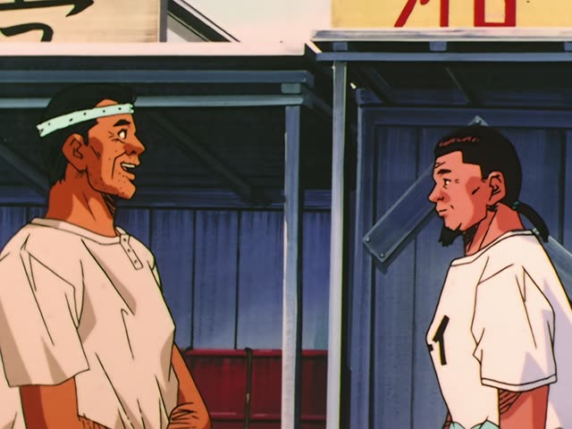
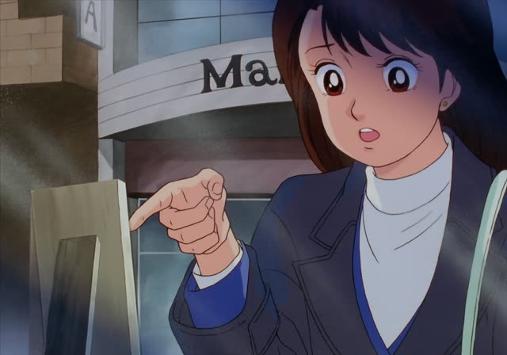
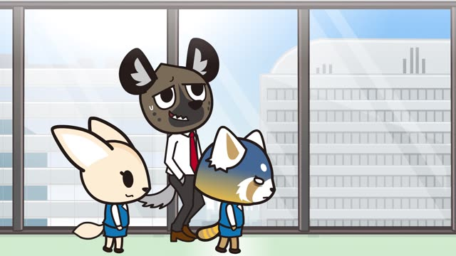

～ということ
| Polite | ～ということです・～ってことですか |
|---|---|
| Casual | ～ということ・～ってこと |
Same meaning: "that means, the fact that". Only the politeness changes. ってこと is the spoken form.
Good Morning Call · Episode 9
諦めるってことですか？
"Does that mean you're giving up?"
～ということ (spoken: ～ってこと) wraps up a whole idea: "the fact that, that means". Most often it checks what someone just said: ～ってこと？ "so you mean...?".
On this card, Teppei asks Mitsuishi if he's really giving up. ですか makes it polite.
ということは… at the start of a sentence: "which means...".
Death Note · Episode 32
隠す気はないということか。
"So she has no intention of hiding it."
On this card, Light reads the situation. ということか: "so that means".
Quick Examples
Your friend says the shop is closed today.
じゃあ、明日行くってこと？
"So you mean we'll go tomorrow?"
CasualAt work, checking a plan.
つまり、会議は中止ということですね。
"So the meeting is cancelled, then."
PoliteHearing a rumor.
田中さんが辞めるってこと、知ってた？
"Did you know Tanaka is quitting?"
ってこと = the fact that.
CasualA doctor explains.
安静にするということが大切です。
"Resting is what matters."
PoliteWith and without
諦めるの？
"Are you giving up?" A direct question.
諦めるってこと？
"So you're saying you're giving up?" Checking what they mean.
Examples from Media

Slam Dunk · Episode 92
お互い協力していけってことですかな。
"I guess it means we should work together."
Brush Up Life · Episode 3
黒衣ってことですか？
"You mean a black coat?"
Instead of a white lab coat.

Oishinbo · Episode 12
ゼロが６つってことは…
"Six zeros, that means..."
Counting the price of a plate.
Samurai Champloo · Episode 15
まだ生き残ってたってこと？
"You mean they're still around?"
Vinland Saga · Episode 16
連中、だいぶ動揺してるってことだな。
"Means they're pretty shaken."

Aggretsuko · Season 1, Episode 2
烈子はいい子ってことだよ。なっ？
"Point is, Retsuko's a good girl. Right?"
Dungeon Meshi · Episode 16
皿ごと食えるってことか！
"So you can eat the plate too!"
1 Litre of Tears · Episode 9
私、いつの間にか自分が病気だってこと、
"Before I know it, (I forget) the fact that I'm sick,"